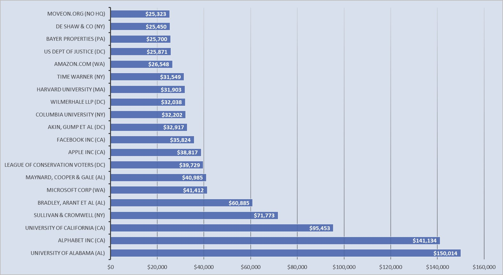
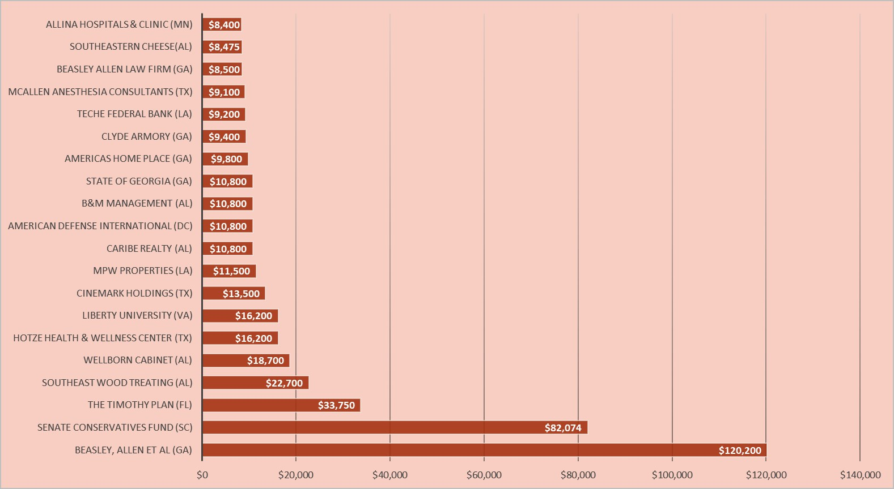

2017 US Senate Special Election in Alabama
And Those Who Funded It
The Senate special election in Alabama was held on December 12, 2017 in order to fill the seat left vacant by Jeff Sessions after he stepped up as Attorney General under President Trump.
THE CANDIDATES:

Roy Moore (R)

Doug Jones (D)
As the Republican, Roy Moore was expected to enjoy a sweeping victory in the deeply red state of Alabama--until November 9th, when a woman came forward about sexual encounters with Moore when she was 14 and he in his 30s. This caught the nation's attention, putting the spotlight on Alabama and giving slight hope to those who wished to gain a Democratic seat in the Senate. As more women came forward with similar allegations, this hope grew into a proxy war between large campaign donors across the US.
Money poured in from individuals, PACs, and companies from all over the country to try to boost Doug Jones's chances of victory.
Organizations and companies from California ended up contributing the most, but Jones also received higher donations from Alabama than Moore, perhaps giving Jones the home-state advantage. Jones received a total of $1,005,527 from his top contributors.
Origin States of the Top 20 Contributors to Doug Jones's Campaign
Top 20 Contributions to Doug Jones
Moore's 20 top supporters were not about to give up, though, and were willing to put their money where their mouths were with $440,899...
But this was still not enough to counter those in favor of Jones, whom no one had accused of pursuing underage girls at any point in his life.
Origin States of the Top 20 Contributors to Roy Moore's Campaign
Top 20 Contributions to Roy Moore
Although the funding mostly came from the outside, the vote was still up to Alabamans, and almost everyone in the nation was on the edge of their seats on the night of December 12th. But in the end, the proxy war seemed to have paid off for Jones's supporters all over. He won the Senate seat by a margin of just over 20,000 votes, largely thanks to the metro areas around Birmingham and Montgomery.
Alabama Election Results
WHERE RED SPECTRUM COUNTIES WENT TO MOORE AND BLUE SPECTRUM COUNTIES WENT TO JONES,
WEIGHTED BY TOTAL NUMBER OF VOTERS IN EACH COUNTY

Winner, winner, chicken dinner.
Created by Anna McDermott, Matthew Seto, Nathaniel Wisness, and Daman Kang.
Candidate images obtained from CyberScoop, dougjones.com, and lgbtweekly.com.